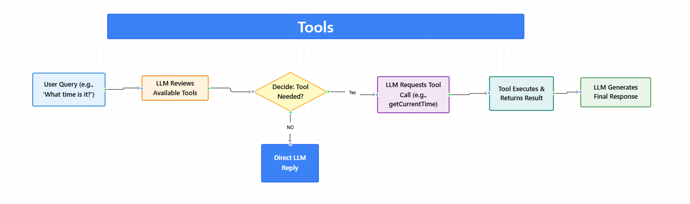

Module 3 — Episode 1
Training:Agentic AI Training
🎯 Learning Objectives
By the end of this episode, you will be able to:
- ✅ Explain what “tools” mean in the context of LLM-based applications
- ✅ Describe how LLMs decide when to call tools (functions)
- ✅ Identify scenarios where tool use enhances LLM performance and accuracy
🧭 Overview
This episode introduces the concept of tool use by Large Language Models (LLMs) — allowing models to call external functions to perform actions, retrieve data, or compute results.
Just as humans can do more with tools than with bare hands, LLMs become far more capable when given access to developer-defined tools.
This concept underpins many real-world AI systems such as assistants, research agents, and data query bots.
🧱 Prerequisites
Readers should already understand:
- Prompt/response flow in LLMs
- How conversational context is managed in LLM applications
- Basic function definition and invocation in a programming language
🔑 Core Concepts
- Tool – A function or capability exposed to an LLM that it can request to call to obtain information or perform an action.
- Tool Use – The process of allowing an LLM to decide when and which tools to invoke based on the user’s input and its reasoning.
- Autonomous Invocation – The LLM independently determines whether to use a tool or generate a direct response.
- Tool Set – The collection of available functions provided to an LLM at runtime (e.g.,
getCurrentTime,queryDatabase,makeAppointment).
🖼 Visual Explanation
 Caption:This diagram shows how an LLM evaluates available tools, decides to invoke a function dynamically, integrates returned data, and produces contextually complete answers.
⚙️ Technical Breakdown
How It Works
1. Input Prompt: The user sends a query (e.g., “What time is it?”).
2. Tool Inspection: The LLM reviews the set of tools available to it.
3. Decision: The LLM determines whether a tool is needed.
4. Function Call: If required, the LLM requests to invoke a tool (e.g., getCurrentTime()).
5. Result Feedback: The tool executes and returns data (e.g., the current time).
6. Response Generation: The returned data is added to the conversation, and the LLM composes the final answer.
Why It Works
Tool use extends the LLM’s capabilities beyond its static training data.
By integrating real-time or external computation via tools, the model can:
- Access up-to-date information
- Perform deterministic calculations
- Interact with external systems (databases, APIs, calendars)
This hybrid approach combines language reasoning (LLM) with symbolic or procedural execution (tools).
When To Use It
✅ Ideal Scenarios- Fetching real-time or external data (e.g., current time, weather, search results)
- Performing structured queries (e.g., database lookups, financial calculations)
- Automating multi-step workflows (e.g., scheduling meetings, sending notifications)
- The LLM can confidently answer from its internal knowledge
- The tool performs unsafe or irreversible actions without human review
- Tool invocation introduces unnecessary latency or complexity
Trade-offs & Limitations
- Complexity: Requires defining and maintaining a reliable tool interface.
- Security: Tools must validate inputs to prevent unintended operations.
- Latency: Each tool call adds round-trip overhead.
- Observability: Developers must log and trace tool usage for debugging.
Performance Considerations
- Minimize the number of tool calls per request to reduce latency.
- Cache results for frequently accessed data (e.g., static lookups).
- Use asynchronous calls when multiple tools might be invoked in sequence.
- Monitor tool response times to detect performance regressions.
💻 Code Examples
Minimal Example
# Define a simple tool
def get_current_time():
from datetime import datetime
return datetime.now().strftime("%I:%M %p")
# Example of tool use
user_input = "What time is it?"
available_tools = {"getCurrentTime": get_current_time}
# Simulated LLM reasoning
if "time" in user_input.lower():
tool_result = available_tools["getCurrentTime"]()
response = f"The current time is {tool_result}."
else:
response = "I can answer that directly without a tool."
print(response)
Example: Multi-Tool Setup
tools = {
"checkCalendar": check_calendar,
"makeAppointment": make_appointment,
"deleteAppointment": delete_appointment
}
# LLM decides which tool(s) to use based on user intent
user_prompt = "Schedule a meeting with Alice on Thursday."
# The LLM might sequentially:
# 1. Call checkCalendar()
# 2. Call makeAppointment()
# 3. Return a confirmation message
🧩 Real-World Examples
- Restaurant Finder: Uses a web search tool to locate nearby restaurants.
- Retail Assistant: Queries a sales database to answer product purchase questions.
- Finance Assistant: Invokes an interest calculation or code evaluation tool.
- Calendar Agent: Checks availability and creates or cancels appointments.
🚀 Key Takeaways
- Tools are functions that extend an LLM’s real-world capabilities.
- The LLM autonomously decides when to use these tools.
- Tool use transforms static language models into interactive, action-capable agents.
- Developers must thoughtfully design, secure, and expose tools relevant to their application domain.
> In the next episode, you’ll learn how to write and implement functions as tools that can be safely and effectively used by your LLM.